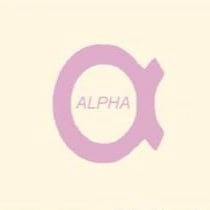
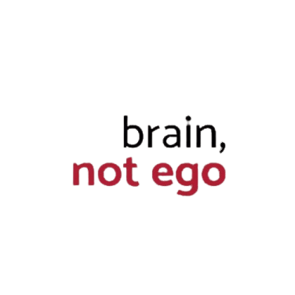
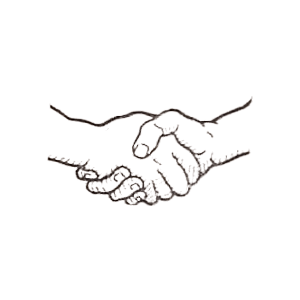
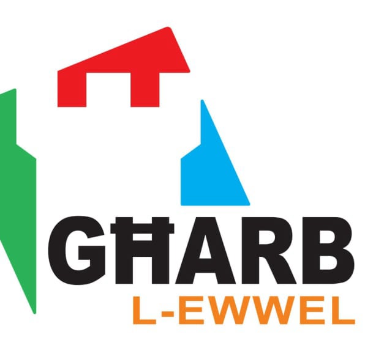

Malta
History
Historical Periods
Historical Timeline
Localities
Beaches
Dog Friendly Beaches
Local Councils
Localities
Regions
Media
Movies
Movies Shot in Malta
Music Artists
Radio Stations
TV Shows
People
Auditors General
Chief Justices
Civil Commissioners
Counts
Deputy Prime Ministers
Governors
Governors-General
Grand Masters
Leaders of the Opposition
Members of the European Parliament
Members of Parliament
Police Commissioners
Presidents
Prime Ministers
Speakers of the House of Representatives
Politics
Governments
Political Parties
Religion
Auxiliary Bishops
Basilicas
Cathedrals
Catholic Bishops of Gozo
Catholic Bishops of Malta
Catholic Organizations
Catholic Parishes in Gozo
Catholic Parishes in Malta
Chapels
Churches
Parish Churches
Pastoral Centres
Sanctuaries
Sites
Megalithic Temples
Places of Interest
Sports
Athletics Clubs
Basketball Clubs
Boċċi Clubs
Boxers
Cricket Clubs
Cycling Clubs
Football Clubs
Hockey Clubs
Motorsport Clubs
Rock Climbing Clubs
Rugby Clubs
Snooker Players
Tennis Clubs
Volleyball Clubs
Water Polo Clubs
Others
AFM Aircraft
AFM Vessels
Catholic Church Schools
Military Ranks
Police Ranks
Search
Political Parties
Related Categories
ABBA
AD+PD
Alleanza Nazzjonali Repubblikana
Alliance for Change
Alliance of Liberal Democrats Malta

Alpha Liberal Democratic Party
Anti-Reform Party

Brain, not ego

Christian Workers' Party
Communist Party
Constitutional Party
Democratic Action Party
Democratic Alternative
Democratic Nationalist Party
Democratic Nationalist Party (1921-1926)
Democratic Party
Eagle Party
Floriana First

GHARB L-Ewwel
Gozo Party
Imperium Europa
Jones Party
Labour Party
Libertas Malta
Malta Workers Party
Maltese Patriots Movement
Maltese Political Union
National Action
Nationalist Party
People's Party
Progressive Constitutionalist Party
Residents of Valletta
Volt
Help
Contact Us
Other Websites
FIFA World Cup
Movies
TwidGrid
About
Discover Malta, Gozo and its other islands, its history, people and culture.
© Copyright 2024 TwidGrid - All Rights Reserved